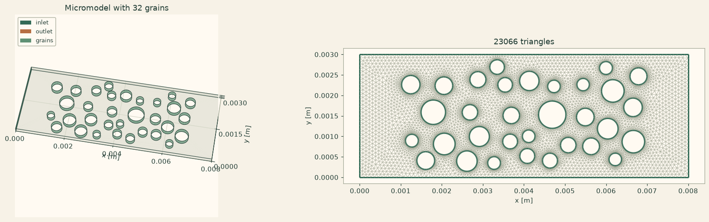

Docs › Examples › Pore-scale flow through a micromodel
Porous media · 2D
Pore-scale flow through a micromodel
Water pushed through a micromodel packed with 32 irregularly placed grains, from creeping flow to pore Reynolds numbers of about 80.
Run locally with OneSimulation. The example downloads are free. Running them requires an activated runtime. Runtime Alpha 0.2.1a7 · CPython 3.13 on macOS (Apple Silicon), Ubuntu 22.04 (x86-64), and Windows x64. Installation and activation · View pilot plans. Scope of the reference checks.

What it computes
The micromodel is read from a STEP file and cut to its cross-section; OneSimulation solves the planar Navier-Stokes equations in the pores with Taylor-Hood elements, raising the inlet pressure from 0.1 Pa to 300 Pa by continuation, and evaluates flow rate, permeability and porosity of the grain zone. The script that builds the STEP file comes with the notebook.
What it checks
Inflow and outflow agree within 3e-6 in creeping flow; the apparent permeability stays constant to 0.03 % up to a pore Reynolds number of 0.55 (Darcy's law) and falls to 0.47 of the Darcy value at Re = 79 (Forchheimer losses); the Darcy permeability changes by 1e-4 over the mesh study and lies at 0.40 of the Kozeny-Carman estimate with k = 5.
Geometry
The notebook starts at the import of the CAD file pore_scale_flow_micromodel.step: STEP (AP242), readable by any CAD program, with the names of the faces that the boundary conditions use. Put it next to the notebook.

The geometry script
The script pore_scale_flow_micromodel_geometry.py builds the geometry with the CAD objects of OneSimulation and writes the file. Change a dimension there, run it, and run the notebook again.
"""Geometry of the OneSimulation example "Pore-scale flow through a micromodel".
Builds a micromodel with the CAD objects of OneSimulation: a channel 8 mm long and 3 mm wide whose
middle 6 mm hold 32 cylindrical grains of radius 0.15 to 0.35 mm, placed at random (fixed seed)
with gaps of at least 0.12 mm between grains and to the side walls. The part is a slab 0.2 mm thick
written to pore_scale_flow_micromodel.step; the faces keep their names x_min (inlet), x_max
(outlet), y_min and y_max (side walls), the grain surfaces are grain.outer_wall. The example
computes on the cross-section z = 0.1 mm.
"""
import numpy as np
from onesim.cad.d3 import Box, Cylinder
mm = 1e-3
length, width, thickness, gap = 8 * mm, 3 * mm, 0.2 * mm, 0.12 * mm
rng = np.random.default_rng(7)
grains = []
while len(grains) < 32:
radius = rng.uniform(0.15, 0.35) * mm
centre = rng.uniform(
(1 * mm + radius, radius + gap), (7 * mm - radius, width - radius - gap)
)
if all(
np.hypot(*(centre - other)) > radius + other_radius + gap
for other, other_radius in grains
):
grains.append((centre, radius))
micromodel = Box(length=length, width=width, height=thickness)
for centre, radius in grains:
micromodel = micromodel - Cylinder(
radius=radius, length=3 * thickness, origin=(centre[0], centre[1], -thickness)
).named("grain")
micromodel.save("pore_scale_flow_micromodel.step")The notebook
The complete notebook, cell by cell. Run it to produce the figures and the comparison printout.
Micromodels are transparent chips with a pattern of grains etched into them. Experiments with them show how water, colloids or a second fluid move through the pores of a soil or a rock, one pore at a time. A pore-scale simulation resolves the same channels: the flow follows a few preferred paths between the grains, while the pressure drops almost linearly along the model. Averaged over many pores, the flow obeys Darcy's law
with the superficial velocity \(U\) (flow rate per width) and the permeability \(K\), as long as the pore Reynolds number is small. At larger speeds inertia adds a loss that grows with the square of the speed (Forchheimer): \(\Delta p/L=\mu U/K+\beta\rho U^2\), so the apparent permeability \(K_\text{app}=\mu UL/\Delta p\) falls.
The micromodel comes from the CAD file pore_scale_flow_micromodel.step, written by pore_scale_flow_micromodel_geometry.py: a channel 8 mm long and 3 mm wide whose middle 6 mm hold 32 grains of radius 0.15 to 0.35 mm. The model is its cross-section.
| side | condition | |---|---| | x_min (inlet) | normal traction: pressure \(\Delta p\) | | x_max (outlet) | traction free, pressure 0 | | y_min, y_max, grain.outer_wall | no slip |
Reference. Mass conservation (inflow equals outflow) and Darcy's linear law at small Reynolds numbers are exact. The Kozeny-Carman relation \(K=\varepsilon^3/(k\,S^2)\) with the porosity \(\varepsilon\), the grain surface \(S\) per unit volume and Carman's constant \(k=5\) (P. C. Carman, Trans. Inst. Chem. Eng. 15, 150-166, 1937) estimates the permeability from the microstructure alone; for flow across cylinders it is known to be accurate only to tens of per cent. Experiments on micromodels of this kind: M. Auset and A. A. Keller, Water Resour. Res. 40, W03503 (2004).
import numpy as np
from onesim.cad.exchange import load
from onesim.materials import NewtonianFluid
from onesim.meshing import TriangularMesher
from onesim.numerics import Numerics
from onesim.numerics.fem import FiniteElement, TaylorHood
from onesim.numerics.linear import SparseDirect
from onesim.numerics.nonlinear import Newton
from onesim.physics.hydrodynamics import (
FlowTraction,
NoSlipWall,
PlanarIncompressibleNavierStokes,
)
from onesim.results.derived import derived_field
from onesim.simulation import Problem, Simulation
from onesim.visualization import plots, theme
theme.set()Geometry and mesh
section cuts the slab at half thickness. The triangles are 90 µm wide and finer along the grains; the mesh study uses 120 µm and 70 µm.
part = load("pore_scale_flow_micromodel.step")
model_section = part.section((0, 0, 1), origin=(0, 0, part.size[2] / 2))
faces = model_section.boundaries
length, width = model_section.size[:2]
mm = 1e-3
meshes = {
size: TriangularMesher(target_size=size * mm).generate(model_section)
for size in (0.12, 0.09, 0.07)
}
mesh = meshes[0.09]
fig = plots.figure(1, 2, size=(16, 4.5))
plots.geometry(
part,
selection={
"inlet": part.boundaries.x_min,
"outlet": part.boundaries.x_max,
"grains": part.boundaries["grain.outer_wall"],
},
labels=False,
camera=plots.Camera(elevation=60, azimuth=-80),
title="Micromodel with 32 grains",
ax=fig[0],
)
plots.mesh(
mesh, groups=("all",), legend=False, title=f"{mesh.cell_count} triangles", ax=fig[1]
)
plots.show()Model
Water at 20 °C. The inlet pressure is raised from 0.1 Pa to 300 Pa; each Newton solve starts from the previous solution. The smallest pressure drop is also solved on the coarser and the finer mesh.
water = NewtonianFluid(density=998.0, dynamic_viscosity=1.0e-3)
drops = (0.1, 1.0, 10.0, 100.0, 300.0)
model = PlanarIncompressibleNavierStokes(domain=model_section.domain(), material=water)
problems = {
drop: Problem(
name="Micromodel",
geometry=model_section,
physics=(model,),
boundary_conditions=(
FlowTraction(boundary=faces.x_min, physics=model, value=(drop, 0.0)),
FlowTraction(boundary=faces.x_max, physics=model, value=(0.0, 0.0)),
NoSlipWall(
boundary=faces.y_min | faces.y_max | faces["grain.outer_wall"],
physics=model,
),
),
)
for drop in drops
}
solver = Newton(
linear_solver=SparseDirect(),
absolute_tolerance=1e-14,
relative_tolerance=1e-9,
maximum_iterations=25,
)
creeping = Numerics(
spatial=FiniteElement(element=TaylorHood()),
initial_guess={model.velocity: (0.0, 0.0)},
nonlinear_solver=solver,
)
study = {
size: Simulation(
problem=problems[drops[0]], mesh=grid, numerics=creeping
).solve_stationary()
for size, grid in meshes.items()
}
results = {drops[0]: study[0.09]}
for low, drop in zip(drops[:-1], drops[1:]):
previous = results[low].field(model.velocity)
numerics = Numerics(
spatial=FiniteElement(element=TaylorHood()),
nonlinear_solver=solver,
initial_guess={
model.velocity: lambda x, y: previous.evaluate(np.column_stack((x, y)))
},
)
results[drop] = Simulation(
problem=problems[drop], mesh=mesh, numerics=numerics
).solve_stationary()Results
The grains fill the zone \(1<x<7\) mm. Its permeability follows from the flow rate and the mean pressures on the two grain-free lines \(x=1\) mm and \(x=7\) mm. The porosity is an integral over the fluid; the grain surface per volume is \(S=4(1-\varepsilon)/d\) with the mean grain diameter \(d\) of equal area.
flows = {
key: (result.field(model.velocity), result.field(model.pressure))
for key, result in results.items()
}
flows.update(
{
("study", size): (result.field(model.velocity), result.field(model.pressure))
for size, result in study.items()
}
)
velocity, pressure = flows[drops[0]]
ones = derived_field(
velocity, lambda u, points: np.ones(len(points)), name="one", unit="1"
)
zone = 6 * mm * width
porosity = (ones.integrate().value - (length - 6 * mm) * width) / zone
grain = 2 * np.sqrt((1 - porosity) * zone / (32 * np.pi))
surface = 4 * (1 - porosity) / grain
kozeny_carman = porosity**3 / (5 * surface**2)
line = np.linspace(0.0, width, 301)
mean_pressure = lambda field, x: np.mean(
field.evaluate(np.column_stack((np.full_like(line, x), line)))
)
flow_rate = lambda field, x: np.trapezoid(
field.evaluate(np.column_stack((np.full_like(line, x), line)))[:, 0], line
)
rates = {
key: (flow_rate(u, 1e-9), flow_rate(u, length - 1e-9))
for key, (u, p) in flows.items()
}
apparent = {
key: water.dynamic_viscosity
* rates[key][1]
/ width
* 6
* mm
/ (mean_pressure(p, 1 * mm) - mean_pressure(p, 7 * mm))
for key, (u, p) in flows.items()
}
reynolds = {
drop: water.density
* rates[drop][1]
/ width
/ porosity
* grain
/ water.dynamic_viscosity
for drop in drops
}
print(
f"porosity of the grain zone {porosity:.3f}, grain surface per volume {surface / 1e3:.3f} 1/mm, mean grain diameter {grain / mm:.3f} mm"
)
print(
" Δp [Pa] pore Re inflow - outflow (relative) K_app [m²] K_app / K(Δp = 0.1 Pa)"
)
for drop in drops:
print(
f"{drop:9.1f} {reynolds[drop]:9.4f} {abs(rates[drop][0] - rates[drop][1]) / rates[drop][1]:20.1e} {apparent[drop]:21.4e} {apparent[drop] / apparent[drops[0]]:13.4f}"
)
print(
f"\nDarcy permeability {apparent[drops[0]]:.4e} m²; Kozeny-Carman with k = 5: {kozeny_carman:.4e} m² "
f"(ratio {apparent[drops[0]] / kozeny_carman:.2f})"
)
print(
"mesh study at Δp = 0.1 Pa: K = "
+ ", ".join(
f"{apparent[key]:.5e} m² ({meshes[size].cell_count} triangles)"
for key, size in (
(("study", 0.12), 0.12),
(("study", 0.09), 0.09),
(("study", 0.07), 0.07),
)
)
)Figure
Speed and pressure in the pores for creeping flow, and the apparent permeability against the pore Reynolds number.
fig = plots.figure(layout=[["speed"], ["pressure"], ["darcy"]], size=(14, 15))
plots.surface(
velocity,
component=lambda u, position: 1e6 * np.linalg.norm(u, axis=1),
limits="robust",
contours=0,
subdivisions=2,
label="speed [µm/s]",
title="Speed in the pores, Δp = 0.1 Pa: the flow takes a few preferred paths",
ax=fig["speed"],
)
plots.surface(
pressure,
limits=(0.0, drops[0]),
contours=8,
subdivisions=2,
label="pressure [Pa]",
title="Pressure: almost linear along the model",
ax=fig["pressure"],
)
plots.line(
points={
"simulation": (
list(reynolds.values()),
[apparent[drop] / apparent[drops[0]] for drop in drops],
)
},
hlines={"Darcy's law": 1.0},
scale="logx",
ylimits=(0.0, 1.1),
xlabel="pore Reynolds number",
ylabel="apparent permeability / Darcy permeability",
title="Darcy regime and the onset of inertia",
legend="lower left",
ax=fig["darcy"],
)
plots.show()Going further
Change the seed or the number of grains in pore_scale_flow_micromodel_geometry.py and write the STEP file again: the porosity and the permeability change together, and the Kozeny-Carman ratio shows how far a single structural number can predict the flow. A passive tracer in the computed flow (ConvectiveHeatTransfer with the velocity as input) shows the spreading of a colloid plume between the grains.